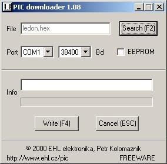

|
Taller de Robótica Básico - Skybot v1.4. - SESION 3 - Windows. “Hola mundo” |
|
|
En este capitulo editaremos, compilaremos y cargaremos en el robot el programa mas sencillo posible: el famoso “hola mundo”. Cuando programamos un ordenador, el programa “hola mundo” es el programa más sencillo que imprime por pantalla la frase “Hola mundo!”.
En nuestro caso, vamos a programar un microcontrolador, que no tiene pantalla. Tampoco tiene teclado. Pero tiene otros periféricos, como por ejemplo un led. El programa “hola mundo” lo único que hará será enceder el led de la Skypic. Es la manera en la que el micro nos dirá: “Estoy vivo y he ejecutado tu programa”.
Nos centraremos en que el programa hola mundo funcione en nuestro robot. En los siguiente capítulos veremos cómo funciona.
|
|
¡Manos a la obra! Vamos a cacharrear. Primero nos descargamos el programa “hola mundo”.
Bajar el paquete hola-mundo-windows.zip.
Al descomprimirlo veremos tres archivos:
ledon.c: El programa principal escrito en C.
Makefile: El fichero con las reglas para
compilar el programa.
Descomprimelo en la carpeta que has debido crear antes que se llame “ C:\robotica\programas”. Y podeis ver lo que hay.
Ahora ejecutamos el Programmers Notepad. Si quereis podeis ver un pantallazo del Programmers notepad aquí.
Pinchamos en “File”, y despues en la opción “Open”, donde nos iremos a la ruta donde hemos almacenado el paquete hola-mundo-windows. Zip( C.\robotica\programas\) . Allí abrimos el archivo que se llama “ledon.c”
Para compilar el programa, solo tienes que pulsar en el menú “Tools”, la opción “make” que es la que hemos configurado antes. Y ya tenemos nuestro programa compilado y listo para descargar en el robot. Si nos fijamos en la carpeta del proyecto veremos que ahora hay bastantes archivos. El que nos interesa es el ledon.hex que contiene el código ejecutable para el PIC y que será el que descarguemos utilizando el PIC_DOWNLOADER.EXE
Al ejecutar la opción make
estamos accediendo al fichero Makefile que hay en
el directorio del ejemplo y que contiene las instrucciones para
compilar el programa. Es importante que los PATHs y nombres que
aparecen en ese fichero se coincidan con los del proyecto.
Por ejemplo, en el proyecto Hola Mundo el programa
principal se llama ledon.c, por eso en el Makefile
aparece NAME1=ledon (sin la extensión).
Si queremos compilar otro, tendremos que cambiar el nombre que aparece
en NAME1 por el nuevo.
Conectar el robot al puerto serie del PC
Alimentarlo
|
|
Arrancar el cargador
Selecionar el fichero ledon.hex
Seleccionar el puerto serie (COMX) y una configuración de 38400 baudios
Pulsar en Write.
|
 |
Se quedará esperando a que se pulse el botón de reset.
Apretar el botón de reset y el ledon.hex se cargará. ¡Ahora el led está encendido!. Si quitamos la alimentación y la volvemos a poner, es decir, reiniciamos a nuestro micro, se volverá a ejecutar el último programa cargado. Los programas se graban en la memoria flash, que es no volátil.
¡¡Ya
hemos programado el robot!!
Si en este proceso nos sale un mesaje de error diciendo que no
se encuentra el Bootloader hay que revisar tres cosas:
1. Que el robot esta alimentado a 5v o 6v.
2. Que estamos dando al pulsador correcto, es decir al de Reset
3. Que esta conectado el cable serie al conector telefónico
marcado como PC (el de la derecha junto a la clema de
alimentación).
Si todavía sigue fallando es muy probable que se haya
desprogramado el bootloader interno. El Skybot lo trae
grabado por defecto pero en caso de no tenerlo se tiene que volver a
grabar. Las instrucciones para ello están aquí.Si
estamos en un taller comentarlo a algún instructor para que
lo haga.


{kind=link}